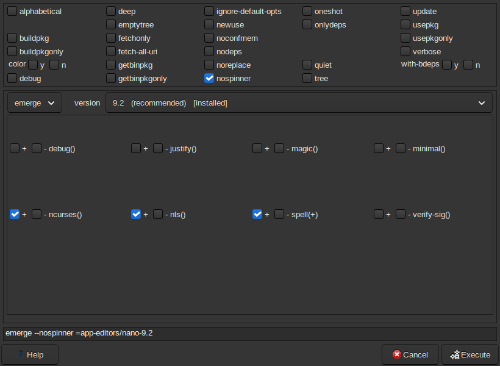

Advanced Emerge installs a package with choices made first: which version, which USE flags, whether to accept a testing version, and emerge's options. Open it with the Adv Emerge button, from the Package menu, or by right-clicking a package.

package.mask line for newer
versions); leave it unticked and later updates move on as usual.Installing goes through the install queue like
any other install: the package and your choices are added to the queue, and
the plan you review shows the setting changes. The USE flags and keyword you
chose are saved for the package, not just this version, so the next version
keeps them; they go in Porthole's own files
(package.use/zz-porthole,
package.accept_keywords/zz-porthole) when you press Install.
Unmerging (the emerge/unmerge list at the left) removes the version you chose, as described in Removing packages.
Right-click an installed package and choose Change USE flags…. Advanced Emerge opens on the installed version with only the USE flags to change; the package is rebuilt with them, one-shot (your world file is left as it is).
Next: Removing packages